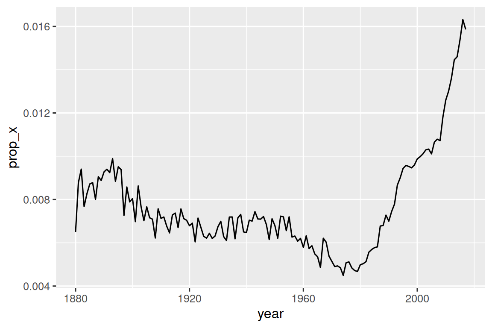

library(tidyverse)
library(babynames)벡터: 정규 표현식
문자열 내의 패턴을 설명하기 위한 간결하고 강력한 언어인 정규 표현식(regular expressions)을 사용하는 함수에 중점을 둘 것입니다. 정규 표현식이라는 용어는 발음하기 약간 길고 복잡하므로 대부분의 사람들은 “regex” 또는 “regexp”로 줄여서 부릅니다.
정규 표현식의 기본과 데이터 분석에 유용한 stringr 함수로 시작합니다. 그런 다음 패턴에 대한 지식을 확장하고 7가지 중요한 새로운 주제(이스케이핑(escaping), 앵커링(anchoring), 문자 클래스(character classes), 단축 클래스(shorthand classes), 수량자(quantifiers), 우선순위(precedence) 및 그룹화(grouping))를 다룹니다. stringr 함수가 작동할 수 있는 다른 유형의 패턴과 정규 표현식의 작동 방식을 미세 조정(tweak)할 수 있는 다양한 “플래그(flags)”에 대해 이야기하겠습니다. 정규 표현식을 사용할 수 있는 tidyverse 및 기본 R의 다른 곳들을 살펴봅니다.
1 패턴의 기초
정규 표현식 패턴이 어떻게 작동하는지 배우기 위해 str_view()를 사용할 것입니다. 문자열과 출력된 표현을 더 잘 이해하기 위해 str_view()를 사용했는데, 이제 두 번째 인수인 정규 표현식과 함께 사용할 것입니다. str_view()는 일치하는 문자열 벡터의 요소만 표시하고 각 일치 항목을 <>로 둘러싸며 가능한 경우 일치 항목을 파란색으로 강조 표시합니다.
단순한 패턴은 해당 문자와 정확히 일치하는 글자와 숫자로 구성됩니다.
str_view(fruit, "berry")
#> [6] │ bil<berry>
#> [7] │ black<berry>
#> [10] │ blue<berry>
#> [11] │ boysen<berry>
#> [19] │ cloud<berry>
#> [21] │ cran<berry>
#> ... and 8 more글자와 숫자는 정확히 일치하며 이를 리터럴 문자(literal characters)라고 합니다. ., +, *, [, ], ?와 같은 대부분의 구두점(punctuation) 문자에는 특별한 의미가 있으며 이를 메타문자(metacharacters)라고 합니다. 예를 들어, .은(는) 아무 문자나 일치하므로, "a."는 “a” 뒤에 다른 문자가 오는 모든 문자열과 일치합니다. (참고로 \n을 제외한 모든 문자입니다.)
str_view(c("a", "ab", "ae", "bd", "ea", "eab"), "a.")
#> [2] │ <ab>
#> [3] │ <ae>
#> [6] │ e<ab>또는 “a”가 포함되고 그 뒤에 세 글자가 오고 그 뒤에 “e”가 오는 모든 과일을 찾을 수 있습니다.
str_view(fruit, "a...e")
#> [1] │ <apple>
#> [7] │ bl<ackbe>rry
#> [48] │ mand<arine>
#> [51] │ nect<arine>
#> [62] │ pine<apple>
#> [64] │ pomegr<anate>
#> ... and 2 more수량자(Quantifiers)는 패턴이 일치할 수 있는 횟수를 제어합니다.
?는 패턴을 선택 사항(optional)으로 만듭니다 (즉, 0번 또는 1번 일치함).+는 패턴을 반복할 수 있게 합니다 (즉, 한 번 이상 일치함).*는 패턴을 선택 사항으로 하거나 반복할 수 있게 합니다 (즉, 0번을 포함하여 임의의 횟수만큼 일치함).
# ab?는 "a"와 일치하고 선택적으로 "b"가 뒤따릅니다.
str_view(c("a", "ab", "abb"), "ab?")
#> [1] │ <a>
#> [2] │ <ab>
#> [3] │ <ab>b
# ab+는 "a"와 일치하고 최소 한 개의 "b"가 뒤따릅니다.
str_view(c("a", "ab", "abb"), "ab+")
#> [2] │ <ab>
#> [3] │ <abb>
# ab*는 "a"와 일치하고 임의의 개수의 "b"가 뒤따릅니다.
str_view(c("a", "ab", "abb"), "ab*")
#> [1] │ <a>
#> [2] │ <ab>
#> [3] │ <abb>문자 클래스(Character classes)는 []로 정의되며 일련의(set of) 문자와 일치시킬 수 있게 해줍니다. 예: [abcd]는 “a”, “b”, “c” 또는 “d”와 일치합니다. ^로 시작하여 일치를 반전(invert)시킬 수도 있습니다. [^abcd]는 “a”, “b”, “c” 또는 “d”를 제외한 모든 것과 일치합니다. 우리는 이 아이디어를 사용하여 모음(vowels)으로 둘러싸인 “x” 또는 자음(consonants)으로 둘러싸인 “y”를 포함하는 단어를 찾을 수 있습니다.
str_view(words, "[aeiou]x[aeiou]")
#> [284] │ <exa>ct
#> [285] │ <exa>mple
#> [288] │ <exe>rcise
#> [289] │ <exi>st
str_view(words, "[^aeiou]y[^aeiou]")
#> [836] │ <sys>tem
#> [901] │ <typ>e교체(alternation) 기호인 |를 사용하여 하나 이상의 대안(alternative) 패턴 중에서 선택할 수 있습니다. 예를 들어, 다음 패턴은 “apple”, “melon” 또는 “nut”을 포함하거나 모음이 반복되는 과일을 찾습니다.
str_view(fruit, "apple|melon|nut")
#> [1] │ <apple>
#> [13] │ canary <melon>
#> [20] │ coco<nut>
#> [52] │ <nut>
#> [62] │ pine<apple>
#> [72] │ rock <melon>
#> ... and 1 more
str_view(fruit, "aa|ee|ii|oo|uu")
#> [9] │ bl<oo>d orange
#> [33] │ g<oo>seberry
#> [47] │ lych<ee>
#> [66] │ purple mangost<ee>n정규 표현식은 매우 간결하고(compact) 구두점 문자를 많이 사용하기 때문에 처음에는 압도적(overwhelming)이고 읽기 어려워 보일 수 있습니다. 걱정하지 마세요. 연습하면 나아질 것이고 간단한 패턴은 곧 제2의 천성(second nature)이 될 것입니다. 유용한 stringr 함수를 연습하여 그 과정을 시작하겠습니다.
2 핵심 함수
이제 정규 표현식의 기초를 익혔으므로(got the basics under your belt), 이를 몇 가지 stringr 및 tidyr 함수와 함께 사용해 봅시다. 일치 항목의 유무를 감지(detect)하는 방법, 일치 항목의 수를 세는(count) 방법, 일치 항목을 고정된 텍스트로 바꾸는(replace) 방법, 패턴을 사용하여 텍스트를 추출(extract)하는 방법을 배웁니다.
2.1 일치 항목 감지
str_detect()는 패턴이 문자형 벡터의 요소와 일치하면 TRUE를, 그렇지 않으면 FALSE를 나타내는 논리형 벡터를 반환합니다.
str_detect(c("a", "b", "c"), "[aeiou]")
#> [1] TRUE FALSE FALSEstr_detect()는 초기 벡터와 동일한 길이의 논리형 벡터를 반환하므로 filter()와 짝이 잘 맞습니다(pairs well). 예를 들어 다음 코드는 소문자 “x”가 포함된 인기 있는 이름을 모두 찾습니다.
babynames |>
filter(str_detect(name, "x")) |>
count(name, wt = n, sort = TRUE)
#> # A tibble: 974 × 2
#> name n
#> <chr> <int>
#> 1 Alexander 665492
#> 2 Alexis 399551
#> 3 Alex 278705
#> 4 Alexandra 232223
#> 5 Max 148787
#> 6 Alexa 123032
#> # ℹ 968 more rowssum() 또는 mean()과 짝을 지어 summarize()와 함께 str_detect()를 사용할 수도 있습니다. sum(str_detect(x, pattern))은 일치하는 관측치의 수를 알려주고 mean(str_detect(x, pattern))은 일치하는 비율을 알려줍니다.
예를 들어 다음 스니펫은 “x”가 포함된 아기 이름의 비율을 연도별로 분류하여 계산하고 시각화합니다. 최근 인기가 급격히 상승(radically increased)한 것 같습니다!
babynames |>
group_by(year) |>
summarize(prop_x = mean(str_detect(name, "x"))) |>
ggplot(aes(x = year, y = prop_x)) +
geom_line()
str_detect()와 밀접하게(closely) 관련된 두 가지 함수가 있습니다.str_subset()및str_which().str_subset()은 일치하는 문자열만 포함하는 문자형 벡터를 반환합니다.str_which()는 일치하는 문자열의 위치를 제공하는 정수형 벡터를 반환합니다.
2.2 일치 항목 개수 세기
str_detect()에서 한 단계 더 복잡해진 것(next step up in complexity)은 str_count()입니다. 참 또는 거짓이 아니라 각 문자열에 일치하는 항목이 몇 개 있는지 알려줍니다.
x <- c("apple", "banana", "pear")
str_count(x, "p")
#> [1] 2 0 1각 일치 항목은 이전 일치 항목이 끝난 곳에서 시작합니다. 즉, 정규 표현식 일치 항목은 결코 겹치지 않습니다(overlap). 예를 들어 "abababa"에서 "aba" 패턴이 몇 번이나 일치할까요? 정규 표현식은 3개가 아니라 2개라고 말합니다.
str_count("abababa", "aba")
#> [1] 2
str_view("abababa", "aba")
#> [1] │ <aba>b<aba>mutate()와 함께 str_count()를 사용하는 것은 자연스럽습니다. 다음 예제는 각 이름의 모음과 자음의 개수를 세기 위해 문자 클래스와 함께 str_count()를 사용합니다.
babynames |>
count(name) |>
mutate(
vowels = str_count(name, "[aeiou]"),
consonants = str_count(name, "[^aeiou]")
)
#> # A tibble: 97,310 × 4
#> name n vowels consonants
#> <chr> <int> <int> <int>
#> 1 Aaban 10 2 3
#> 2 Aabha 5 2 3
#> 3 Aabid 2 2 3
#> 4 Aabir 1 2 3
#> 5 Aabriella 5 4 5
#> 6 Aada 1 2 2
#> # ℹ 97,304 more rows자세히 살펴보면(look closely) 우리 계산에 약간 이상한(off) 점이 있음을 알 수 있습니다. “Aaban”에는 “a”가 3개 포함되어 있지만 요약에는 2개의 모음만 보고됩니다. 정규 표현식은 대소문자를 구분하기(case sensitive) 때문입니다. 이 문제를 해결할(fix) 수 있는 세 가지 방법이 있습니다.
- 문자 클래스에 대문자 모음을 추가합니다.
str_count(name, "[aeiouAEIOU]"). - 정규 표현식에 대소문자를 무시하도록 지시(Tell)합니다.
str_count(name, regex("[aeiou]", ignore_case = TRUE)). - 이름을 소문자로 변환하기 위해
str_to_lower()를 사용합니다.str_count(str_to_lower(name), "[aeiou]").
문자열로 작업할 때 이러한 다양한 접근 방식은 꽤 전형적(typical)입니다 — 패턴을 더 복잡하게 만들거나 문자열을 전처리하여 목표에 도달하는(reach) 방법이 여러 가지인 경우가 많습니다. 한 가지 방식을 시도하다 막히면(get stuck) 태세를 전환하여(switch gears) 다른 관점(perspective)에서 문제를 다루는(tackle) 것이 유용할 수 있습니다.
이 경우 이름에 두 개의 함수를 적용하고 있으므로, 먼저 변환하는 것이 더 쉽다고 생각합니다.
babynames |>
count(name) |>
mutate(
name = str_to_lower(name),
vowels = str_count(name, "[aeiou]"),
consonants = str_count(name, "[^aeiou]")
)
#> # A tibble: 97,310 × 4
#> name n vowels consonants
#> <chr> <int> <int> <int>
#> 1 aaban 10 3 2
#> 2 aabha 5 3 2
#> 3 aabid 2 3 2
#> 4 aabir 1 3 2
#> 5 aabriella 5 5 4
#> 6 aada 1 3 1
#> # ℹ 97,304 more rows2.3 값 바꾸기
일치 항목을 감지하고 세는 것 외에도 str_replace() 및 str_replace_all()을 사용하여 일치 항목을 수정(modify)할 수 있습니다. str_replace()는 첫 번째 일치 항목을 바꾸고 이름에서 알 수 있듯이(as the name suggests) str_replace_all()은 모든 일치 항목을 바꿉니다.
x <- c("apple", "pear", "banana")
str_replace_all(x, "[aeiou]", "-")
#> [1] "-ppl-" "p--r" "b-n-n-"str_remove() 및 str_remove_all()은 str_replace(x, pattern, "")의 유용한 단축키(handy shortcuts)입니다.
x <- c("apple", "pear", "banana")
str_remove_all(x, "[aeiou]")
#> [1] "ppl" "pr" "bnn"이러한 함수는 데이터 정리를 수행할 때 자연스럽게 mutate()와 짝을 이루며 일관성 없는 형식(inconsistent formatting)의 껍질을 벗겨내기(peel off layers) 위해 반복적으로 적용하는 경우가 많습니다.
2.4 변수 추출
마지막으로 논의할 함수는 정규 표현식을 사용하여 한 열에서 하나 이상의 새 열로 데이터를 추출하는 separate_wider_regex()입니다. 이 함수는 separate_wider_position() 및 separate_wider_delim() 함수의 동료(peer)입니다. 이 함수들은 개별 벡터가 아닌 데이터 프레임(의 열)에서 작동하기 때문에 tidyr에 있습니다(live).
작동 방식을 보여주기 위해 간단한 데이터셋을 만들어 보겠습니다.
여기에 꽤 이상한 형식으로 많은 사람의 이름, 성별 및 나이를 나타내는 babynames에서 파생된 일부 데이터가 있습니다.
df <- tribble(
~str ,
"<Sheryl>-F_34" ,
"<Kisha>-F_45" ,
"<Brandon>-N_33" ,
"<Sharon>-F_38" ,
"<Penny>-F_58" ,
"<Justin>-M_41" ,
"<Patricia>-F_84" ,
)separate_wider_regex()를 사용하여 이 데이터를 추출하려면 각 조각과 일치하는 정규 표현식 시퀀스(sequence)를 구성(construct)하기만 하면 됩니다. 해당 조각의 내용(contents)이 출력에 나타나기를 원하면 이름을 지정합니다.
df |>
separate_wider_regex(
str,
patterns = c(
"<",
name = "[A-Za-z]+",
">-",
gender = ".",
"_",
age = "[0-9]+"
)
)
#> # A tibble: 7 × 3
#> name gender age
#> <chr> <chr> <chr>
#> 1 Sheryl F 34
#> 2 Kisha F 45
#> 3 Brandon N 33
#> 4 Sharon F 38
#> 5 Penny F 58
#> 6 Justin M 41
#> # ℹ 1 more row일치가 실패할 경우 separate_wider_delim() 및 separate_wider_position()과 마찬가지로 too_few = "debug"를 사용하여 무엇이 잘못되었는지 파악(figure out)할 수 있습니다.
2.5 연습 문제
많은 모음을 가진 아기 이름은 무엇입니까? 높은 비율의 모음을 가진 이름은 무엇입니까? (힌트: 분모(denominator)는 무엇입니까?)
"a/b/c/d/e"의 모든 슬래시(forward slashes)를 백슬래시로 바꾸세요. 모든 백슬래시를 슬래시로 바꾸어 변환을 실행 취소(undo)하려고 시도하면 어떻게 됩니까? (문제에 대해서는 곧 논의할 것입니다.)str_replace_all()을 사용하여str_to_lower()의 간단한 버전을 구현하세요.여러분의 국가에서 일반적으로 작성되는 전화번호와 일치하는 정규 표현식을 만드세요.
3 패턴 세부 정보
이제 패턴 언어의 기초와 일부 stringr 및 tidyr 함수에서 이를 사용하는 방법을 이해했으므로 세부 사항을 더 파헤쳐(dig into) 볼 때입니다.
여기서 사용하는 용어는 각 구성 요소에 대한 기술적인 이름입니다. 이 용어들이 항상 그 목적을 잘 연상시키는(evocative) 것은 아니지만, 나중에 구글에서 더 자세한 내용을 검색하고 싶을 때 올바른 용어를 아는 것이 매우 도움이 됩니다.
3.1 이스케이핑
리터럴 .을 일치시키려면 정규 표현식에 메타문자를 리터럴하게(literally) 일치시키도록 지시하는 이스케이프(escape)가 필요합니다. 문자열과 마찬가지로 정규 표현식도 이스케이핑을 위해 백슬래시를 사용합니다. 따라서 .을 일치시키려면 정규 표현식 \.가 필요합니다. 안타깝게도 이로 인해 문제가 발생합니다.
우리는 정규 표현식을 나타내기 위해 문자열을 사용하며, \는 문자열에서도 이스케이프 기호로 사용됩니다. 따라서 정규 표현식 \.를 만들려면 다음 예제에서 보여주듯이 문자열 "\\."가 필요합니다.
# 정규 표현식 \.를 만들려면 \\.를 사용해야 합니다.
dot <- "\\."
# 그러나 표현식 자체에는 \가 하나만 포함되어 있습니다.
str_view(dot)
#> [1] │ \.
# 그리고 이것은 R에게 명시적인(explicit) .을 찾도록 지시합니다.
str_view(c("abc", "a.c", "bef"), "a\\.c")
#> [2] │ <a.c>이 책에서는 일반적으로 \.와 같이 따옴표 없이 정규 표현식을 작성합니다. 실제로 입력해야 할 내용을 강조(emphasize)해야 하는 경우 따옴표로 묶고 "\\."와 같이 이스케이프를 추가합니다.
정규 표현식에서 \가 이스케이프 문자로 사용된다면 리터럴 \는 어떻게 일치시킬까요? 글쎄요, 그것을 이스케이프하여 정규 표현식 \\를 만들어야 합니다.
그 정규 표현식을 만들려면 문자열을 사용해야 하는데, 문자열에서도 \를 이스케이프해야 합니다. 즉, 리터럴 \와 일치시키려면 "\\\\"라고 써야 합니다. 하나를 일치시키기 위해 4개의 백슬래시가 필요합니다!
x <- "a\\b"
str_view(x)
#> [1] │ a\b
str_view(x, "\\\\")
#> [1] │ a<\>b원시 문자열을 사용하는 것이 더 쉽다는 것을 알 수도 있습니다. 그렇게 하면 이스케이핑의 한 계층(layer)을 피할 수 있습니다.
str_view(x, r"{\\}")
#> [1] │ a<\>b리터럴 ., $, |, *, +, ?, {, }, (, )와 일치시키려는 경우 백슬래시 이스케이프를 사용하는 대신 문자 클래스를 사용할 수 있는 대안(alternative)이 있습니다.
str_view(c("abc", "a.c", "a*c", "a c"), "a[.]c")
#> [2] │ <a.c>
str_view(c("abc", "a.c", "a*c", "a c"), ".[*]c")
#> [3] │ <a*c>3.2 앵커
기본적으로 정규 표현식은 문자열의 모든 부분과 일치합니다. 시작 또는 끝에서 일치시키려면 시작을 일치시키기 위해 ^를, 끝을 일치시키기 위해 $를 사용하여 정규 표현식을 고정(anchor)해야 합니다.
str_view(fruit, "^a")
#> [1] │ <a>pple
#> [2] │ <a>pricot
#> [3] │ <a>vocado
str_view(fruit, "a$")
#> [4] │ banan<a>
#> [15] │ cherimoy<a>
#> [30] │ feijo<a>
#> [36] │ guav<a>
#> [56] │ papay<a>
#> [74] │ satsum<a>달러 금액을 그런 식으로(how) 표기하기 때문에 $가 문자열의 시작 부분과 일치해야 한다고 생각하기 쉽지만(tempting), 그것은 정규 표현식이 원하는 바가 아닙니다.
정규 표현식이 전체 문자열과 일치하도록 강제(force)하려면 ^와 $ 모두를 사용하여 고정(anchor)하세요.
str_view(fruit, "apple")
#> [1] │ <apple>
#> [62] │ pine<apple>
str_view(fruit, "^apple$")
#> [1] │ <apple>단어 사이의 경계(boundary)(즉, 단어의 시작이나 끝)를 \b로 일치시킬 수도 있습니다. 예를 들어 sum()의 모든 사용을 찾기 위해 summarize, summary, rowsum 등을 일치시키는 것을 피하려면 \bsum\b를 검색하면 됩니다.
x <- c("summary(x)", "summarize(df)", "rowsum(x)", "sum(x)")
str_view(x, "sum")
#> [1] │ <sum>mary(x)
#> [2] │ <sum>marize(df)
#> [3] │ row<sum>(x)
#> [4] │ <sum>(x)
str_view(x, "\\bsum\\b")
#> [4] │ <sum>(x)단독으로 사용할 때 앵커는 너비가 없는 일치 항목(zero-width match)을 생성합니다.
str_view("abc", c("$", "^", "\\b"))
#> [1] │ abc<>
#> [2] │ <>abc
#> [3] │ <>abc<>독립적인 앵커(standalone anchor)를 바꿀 때(replace) 어떤 일이 일어나는지 이해하는 데 도움이 됩니다.
str_replace_all("abc", c("$", "^", "\\b"), "--")
#> [1] "abc--" "--abc" "--abc--"3.3 문자 클래스
문자 클래스(character class) 또는 문자 집합(set)을 사용하면 집합 내의 모든 문자를 일치시킬 수 있습니다. 위에서 논의했듯이 []를 사용하여 고유한 집합을 구성할 수 있습니다. 여기서 [abc]는 “a”, “b” 또는 “c”와 일치하고 [^abc]는 “a”, “b” 또는 “c”를 제외한 모든 문자와 일치합니다. ^ 외에도 []: 안에서 특별한 의미를 갖는 두 가지 다른 문자가 있습니다.
-는 범위를 정의합니다. 예:[a-z]는 소문자 글자와 일치하고[0-9]는 모든 숫자와 일치합니다.\는 특수 문자를 이스케이프하므로[\^\-\]]는^,-또는]와 일치합니다.
다음은 몇 가지 예제입니다.
x <- "abcd ABCD 12345 -!@#%."
str_view(x, "[abc]+")
#> [1] │ <abc>d ABCD 12345 -!@#%.
str_view(x, "[a-z]+")
#> [1] │ <abcd> ABCD 12345 -!@#%.
str_view(x, "[^a-z0-9]+")
#> [1] │ abcd< ABCD >12345< -!@#%.>
# 그렇지 않으면 [] 내에서 특별한 의미를 갖는 문자를 일치시키려면
# 이스케이프가 필요합니다.
str_view("a-b-c", "[a-c]")
#> [1] │ <a>-<b>-<c>
str_view("a-b-c", "[a\\-c]")
#> [1] │ <a><->b<-><c>일부 문자 클래스는 너무 자주 사용되어 고유한 단축키(shortcut)를 갖습니다. 줄 바꿈(newline)을 제외한 모든 문자와 일치하는 .는 이미 보셨을 것입니다. 세 쌍의(pairs) 특히 유용한 단축키가 더 있습니다.
\d 또는 \s가 포함된 정규 표현식을 만들려면 문자열을 위해 \를 이스케이프해야 하므로 "\\d" 또는 "\\s"를 입력해야 한다는 점을 기억하세요.
\d는 임의의 숫자와 일치합니다;\D는 숫자가 아닌 모든 것과 일치합니다.\s는 임의의 공백(스페이스, 탭, 줄 바꿈)과 일치합니다;\S는 공백이 아닌 모든 것과 일치합니다.\w는 임의의 “단어(word)” 문자(즉, 글자와 숫자)와 일치합니다;\W는 임의의 “단어 아님(non-word)” 문자와 일치합니다.
다음 코드는 글자, 숫자, 구두점 문자의 선택 항목(selection)으로 6개의 단축키를 시연(demonstrates)합니다.
x <- "abcd ABCD 12345 -!@#%."
str_view(x, "\\d+")
#> [1] │ abcd ABCD <12345> -!@#%.
str_view(x, "\\D+")
#> [1] │ <abcd ABCD >12345< -!@#%.>
str_view(x, "\\s+")
#> [1] │ abcd< >ABCD< >12345< >-!@#%.
str_view(x, "\\S+")
#> [1] │ <abcd> <ABCD> <12345> <-!@#%.>
str_view(x, "\\w+")
#> [1] │ <abcd> <ABCD> <12345> -!@#%.
str_view(x, "\\W+")
#> [1] │ abcd< >ABCD< >12345< -!@#%.>3.4 수량자
수량자(Quantifiers)는 패턴이 몇 번 일치할지를 제어합니다. ?(0개 또는 1개 일치), +(1개 이상 일치) 및 *(0개 이상 일치)에 대해 배웠습니다. 예를 들어 colou?r은 미국 또는 영국식 철자(spelling)와 일치하고 \d+는 하나 이상의 숫자와 일치하며 \s?는 단일 공백 항목과 선택적으로 일치합니다. {}를 사용하여 일치 횟수를 정확하게 지정할 수도 있습니다.
{n}은 정확히 n번 일치합니다.{n,}은 최소 n번 일치합니다.{n,m}은 n번에서 m번 사이로 일치합니다.
3.5 연산자 우선순위와 괄호
ab+는 무엇과 일치합니까?: “a” 다음에 “b”가 하나 이상 오는 것을 일치시킵니까, 아니면 “ab”가 임의의 횟수만큼 반복되는 것을 일치시킵니까?^a|b$는 무엇과 일치합니까?: 전체 문자열 a 또는 전체 문자열 b와 일치합니까, 아니면 a로 시작하는 문자열 또는 b로 끝나는 문자열과 일치합니까?
이러한 질문에 대한 답은 학창 시절에 배웠을 수 있는 PEMDAS 또는 BEDMAS 규칙과 유사한 연산자 우선순위(operator precedence)에 의해 결정됩니다.
*가 더 높은 우선순위를 갖고 +가 더 낮은 우선순위를 갖기 때문에(즉, +보다 *를 먼저 계산함) a + b * c가 (a + b) * c가 아닌 a + (b * c)와 같다는 것을 알고 계실 것입니다.
이와 유사하게 정규 표현식에는 고유한 우선순위 규칙이 있습니다. 수량자는 우선순위가 높고 교체(alternation)는 우선순위가 낮습니다. 즉, ab+는 a(b+)와 같고 ^a|b$는 (^a)|(b$)와 같습니다.
대수학(algebra)에서와 마찬가지로 괄호를 사용하여 일반적인 순서를 무시할 수 있습니다. 그러나 대수학과 달리 정규 표현식의 우선순위 규칙은 기억하기 어려울(unlikely to remember) 수 있으므로 괄호를 자유롭게(liberally) 사용하세요.
3.6 그룹화 및 캡처
괄호는 연산자 우선순위를 무시하는 것 외에도 또 다른 중요한 효과가 있습니다. 괄호는 일치 항목의 하위 구성 요소(sub-components)를 사용할 수 있게 해주는 캡처 그룹(capturing groups)을 만듭니다.
캡처 그룹을 사용하는 첫 번째 방법은 후방 참조(back reference)를 통해 일치 항목 내에서 그룹을 다시 참조(refer back)하는 것입니다. \1은 첫 번째 괄호에 포함된 일치 항목을 나타내고(refers to) \2는 두 번째 괄호 등등을 나타냅니다. 예를 들어, 다음 패턴은 쌍이 반복되는 문자를 가진 모든 과일을 찾습니다.
str_view(fruit, "(..)\\1")
#> [4] │ b<anan>a
#> [20] │ <coco>nut
#> [22] │ <cucu>mber
#> [41] │ <juju>be
#> [56] │ <papa>ya
#> [73] │ s<alal> berry그리고 다음 패턴은 동일한 문자 쌍으로 시작하고 끝나는 모든 단어를 찾습니다.
str_view(words, "^(..).*\\1$")
#> [152] │ <church>
#> [217] │ <decide>
#> [617] │ <photograph>
#> [699] │ <require>
#> [739] │ <sense>str_replace()에서 후방 참조를 사용할 수도 있습니다. 예를 들어 이 코드는 sentences에서 두 번째 단어와 세 번째 단어의 순서를 바꿉니다(switches).
sentences |>
str_replace("(\\w+) (\\w+) (\\w+)", "\\1 \\3 \\2") |>
str_view()
#> [1] │ The canoe birch slid on the smooth planks.
#> [2] │ Glue sheet the to the dark blue background.
#> [3] │ It's to easy tell the depth of a well.
#> [4] │ These a days chicken leg is a rare dish.
#> [5] │ Rice often is served in round bowls.
#> [6] │ The of juice lemons makes fine punch.
#> ... and 714 more각 그룹에 대한 일치 항목을 추출하려면 str_match()를 사용할 수 있습니다. 그러나 str_match()는 행렬(matrix)을 반환하므로 다루기 특별히 쉽지는 않습니다.
sentences |>
str_match("the (\\w+) (\\w+)") |>
head()
#> [,1] [,2] [,3]
#> [1,] "the smooth planks" "smooth" "planks"
#> [2,] "the sheet to" "sheet" "to"
#> [3,] "the depth of" "depth" "of"
#> [4,] NA NA NA
#> [5,] NA NA NA
#> [6,] NA NA NA티블(tibble)로 변환하고 열의 이름을 지정할 수 있습니다.
sentences |>
str_match("the (\\w+) (\\w+)") |>
as_tibble(.name_repair = "minimal") |>
set_names("match", "word1", "word2")
#> # A tibble: 720 × 3
#> match word1 word2
#> <chr> <chr> <chr>
#> 1 the smooth planks smooth planks
#> 2 the sheet to sheet to
#> 3 the depth of depth of
#> 4 <NA> <NA> <NA>
#> 5 <NA> <NA> <NA>
#> 6 <NA> <NA> <NA>
#> # ℹ 714 more rows하지만 그러면 기본적으로 여러분만의 버전인 separate_wider_regex()를 다시 만든 셈이 됩니다. 실제로 장막 뒤에서(behind the scenes) separate_wider_regex()는 여러분의 패턴 벡터를 명명된 구성 요소를 캡처하기 위해 그룹화를 사용하는 단일 정규 표현식으로 변환합니다.
때때로 일치 그룹을 만들지 않고 괄호를 사용하고 싶을 때가 있습니다. (?:)를 사용하여 캡처하지 않는 그룹(non-capturing group)을 만들 수 있습니다.
x <- c("a gray cat", "a grey dog")
str_match(x, "gr(e|a)y")
#> [,1] [,2]
#> [1,] "gray" "a"
#> [2,] "grey" "e"
str_match(x, "gr(?:e|a)y")
#> [,1]
#> [1,] "gray"
#> [2,] "grey"3.7 연습 문제 (Exercises)
리터럴 문자열
"'\를 어떻게 일치시키시겠습니까?"$^$"는 어떻습니까?이러한 각 패턴이
\와 일치하지 않는 이유를 설명하세요."\","\\","\\\".stringr::words에 있는 일반적인 단어 말뭉치(corpus)가 주어지면 다음을 수행하는 모든 단어를 찾는 정규 표현식을 만드세요.- “y”로 시작하는 단어
- “y”로 시작하지 않는 단어
- “x”로 끝나는 단어
- 길이가 정확히 세 글자인 단어 (
str_length()를 사용하여 부정행위를 하지 마세요!) - 일곱 글자 이상인 단어
- 모음-자음 쌍(vowel-consonant pair)이 포함된 단어
- 모음-자음 쌍이 연속으로(in a row) 최소 두 개 포함된 단어
- 반복되는 모음-자음 쌍으로만 구성된 단어
다음 각 단어에 대한 영국식 또는 미국식 철자와 일치하는 11개의 정규 표현식을 만드세요.
airplane/aeroplane,aluminum/aluminium,analog/analogue,ass/arse,center/centre,defense/defence,donut/doughnut,gray/grey,modeling/modelling,skeptic/sceptic,summarize/summarise. 가능한 한 짧은 정규 표현식을 만들어 보세요!words의 첫 번째 글자와 마지막 글자를 바꾸세요. 그중 아직words에 있는 문자열은 무엇입니까?다음 정규 표현식이 일치하는 대상을 말로 설명하세요. (각 항목이 정규 표현식인지 정규 표현식을 정의하는 문자열인지 주의 깊게 읽어보세요.)
^.*$"\\{.+\\}"\d{4}-\d{2}-\d{2}"\\\\{4}"\..\..\..(.)\1\1"(..)\\1"
https://regexcrossword.com/challenges/beginner에서 초보자용 정규 표현식 십자말풀이(crosswords)를 풀어보세요.
4 패턴 제어
단순한 문자열 대신 패턴 객체를 사용하여 일치 항목의 세부 사항에 대해 추가적인 제어를 행사할 수 있습니다. 이를 통해 이른바 정규 표현식 플래그를 제어하고 아래 설명된 대로 다양한 유형의 고정 문자열을 일치시킬 수 있습니다.
4.1 정규 표현식 플래그
정규 표현식의 세부 사항을 제어하는 데 사용할 수 있는 여러 가지 설정이 있습니다. 이러한 설정을 다른 프로그래밍 언어에서는 종종 플래그(flags)라고 부릅니다. stringr에서는 패턴을 regex() 호출로 래핑하여(wrapping) 이를 사용할 수 있습니다.
문자가 대문자 또는 소문자 형식과 일치할 수 있게 해주기 때문에 유용한 플래그는 아마도 ignore_case = TRUE일 것입니다.
bananas <- c("banana", "Banana", "BANANA")
str_view(bananas, "banana")
#> [1] │ <banana>
str_view(bananas, regex("banana", ignore_case = TRUE))
#> [1] │ <banana>
#> [2] │ <Banana>
#> [3] │ <BANANA>여러 줄(multiline) 문자열(즉, \n이 포함된 문자열)로 많은 작업을 수행하는 경우 dotall 및 multiline도 유용할 수 있습니다.
dotall = TRUE는.이\n을 포함한 모든 것과 일치하게 합니다.
x <- "Line 1\nLine 2\nLine 3"
str_view(x, ".Line")
#> ✖ Empty `string` provided.
str_view(x, regex(".Line", dotall = TRUE))
#> [1] │ Line 1<
#> │ Line> 2<
#> │ Line> 3multiline = TRUE는^및$가 전체 문자열의 시작과 끝이 아니라 각 줄의 시작과 끝과 일치하게 합니다.
x <- "Line 1\nLine 2\nLine 3"
str_view(x, "^Line")
#> [1] │ <Line> 1
#> │ Line 2
#> │ Line 3
str_view(x, regex("^Line", multiline = TRUE))
#> [1] │ <Line> 1
#> │ <Line> 2
#> │ <Line> 3마지막으로, 복잡한 정규 표현식을 작성하고 있고 미래의 여러분이 이해하지 못할까 봐 걱정된다면 comments = TRUE를 시도해 볼 수 있습니다. 이것은 공백(spaces)과 줄 바꿈(new lines), 그리고 # 뒤의 모든 것을 무시하도록 패턴 언어를 미세 조정합니다. 다음 예제와 같이 주석과 공백을 사용하여 복잡한 정규 표현식을 더 이해하기 쉽게 만들 수 있습니다.
phone <- regex(
r"(
\(? # 선택적 여는 괄호(optional opening parens)
(\d{3}) # 지역 번호(area code)
[)\-]? # 선택적 닫는 괄호 또는 대시(optional closing parens or dash)
\ ? # 선택적 공백(optional space)
(\d{3}) # 또 다른 숫자 세 개(another three numbers)
[\ -]? # 선택적 공백 또는 대시(optional space or dash)
(\d{4}) # 네 개의 숫자 더(four more numbers)
)",
comments = TRUE
)
str_extract(c("514-791-8141", "(123) 456 7890", "123456"), phone)
#> [1] "514-791-8141" "(123) 456 7890" NA주석을 사용하고 공백, 줄 바꿈 또는 #을 일치시키려면 \로 이스케이프해야 합니다.
4.2 고정 일치
fixed()를 사용하여 정규 표현식 규칙에서 빠져나올(opt-out) 수 있습니다.
str_view(c("", "a", "."), fixed("."))
#> [3] │ <.>fixed()는 대소문자를 무시할 수 있는 기능도 제공합니다.
str_view("x X", "X")
#> [1] │ x <X>
str_view("x X", fixed("X", ignore_case = TRUE))
#> [1] │ <x> <X>영어가 아닌 텍스트로 작업하는 경우 지정한 locale에서 사용하는 대문자 표기에 대한 전체 규칙을 구현(implements)하므로 fixed() 대신 coll()을 원할 것입니다.
str_view("i İ ı I", fixed("İ", ignore_case = TRUE))
#> [1] │ i <İ> ı I
str_view("i İ ı I", coll("İ", ignore_case = TRUE, locale = "tr"))
#> [1] │ <i> <İ> ı I5 실습
이러한 아이디어를 실천(practice)에 옮기기 위해(To put) 다음으로 반-실제적인(semi-authentic) 문제 몇 가지를 풀어보겠습니다. 세 가지 일반적인 기술에 대해 논의할 것입니다.
- 단순한 긍정 및 부정 대조군(positive and negative controls)을 만들어 작업 검사하기
- 정규 표현식을 부울 대수(Boolean algebra)와 결합하기
- 문자열 조작을 사용하여 복잡한 패턴 만들기
5.1 작업 검사하기 (Check your work)
먼저 “The”로 시작하는 모든 문장을 찾아봅시다. ^ 앵커만 사용하는 것으로는 충분하지 않습니다.
str_view(sentences, "^The")
#> [1] │ <The> birch canoe slid on the smooth planks.
#> [4] │ <The>se days a chicken leg is a rare dish.
#> [6] │ <The> juice of lemons makes fine punch.
#> [7] │ <The> box was thrown beside the parked truck.
#> [8] │ <The> hogs were fed chopped corn and garbage.
#> [11] │ <The> boy was there when the sun rose.
#> ... and 271 more해당 패턴은 They 또는 These와 같은 단어로 시작하는 문장과도 일치하기 때문입니다. 단어 경계(word boundary)를 추가하여 수행할 수 있는 “e”가 단어의 마지막 글자인지 확인해야 합니다.
str_view(sentences, "^The\\b")
#> [1] │ <The> birch canoe slid on the smooth planks.
#> [6] │ <The> juice of lemons makes fine punch.
#> [7] │ <The> box was thrown beside the parked truck.
#> [8] │ <The> hogs were fed chopped corn and garbage.
#> [11] │ <The> boy was there when the sun rose.
#> [13] │ <The> source of the huge river is the clear spring.
#> ... and 250 more대명사(pronoun)로 시작하는 모든 문장을 찾는 것은 어떨까요?
str_view(sentences, "^She|He|It|They\\b")
#> [3] │ <It>'s easy to tell the depth of a well.
#> [15] │ <He>lp the woman get back to her feet.
#> [27] │ <He>r purse was full of useless trash.
#> [29] │ <It> snowed, rained, and hailed the same morning.
#> [63] │ <He> ran half way to the hardware store.
#> [90] │ <He> lay prone and hardly moved a limb.
#> ... and 57 more결과를 빠르게 검사(inspection)해보면(shows) 거짓 일치(spurious matches)가 몇 가지 있다는 것을 알 수 있습니다. 괄호를 사용하는 것을 잊었기 때문입니다.
str_view(sentences, "^(She|He|It|They)\\b")
#> [3] │ <It>'s easy to tell the depth of a well.
#> [29] │ <It> snowed, rained, and hailed the same morning.
#> [63] │ <He> ran half way to the hardware store.
#> [90] │ <He> lay prone and hardly moved a limb.
#> [116] │ <He> ordered peach pie with ice cream.
#> [127] │ <It> caught its hind paw in a rusty trap.
#> ... and 51 more처음 몇 개의 일치 항목에서 발생하지 않은 그런 실수(mistake)를 어떻게 발견할(spot) 수 있을지 궁금할 것입니다. 좋은 기술은 몇 가지 긍정 및 부정 일치 항목을 만들고 이를 사용하여 패턴이 예상대로 작동하는지 테스트하는 것입니다.
pos <- c("He is a boy", "She had a good time")
neg <- c("Shells come from the sea", "Hadley said 'It's a great day'")
pattern <- "^(She|He|It|They)\\b"
str_detect(pos, pattern)
#> [1] TRUE TRUE
str_detect(neg, pattern)
#> [1] FALSE FALSE보통(typically) 부정적인 예보다 좋은 긍정적인 예를 생각해 내는 것이 훨씬 더 쉽습니다. 자신의 약점이 어디인지 예측할 수 있을 만큼 정규 표현식에 능숙해지려면 시간이 꽤(a while) 걸리기 때문입니다. 그럼에도 불구하고(Nevertheless) 그것들은 여전히 유용합니다. 문제를 작업하면서 실수의 컬렉션을 천천히 축적(accumulate)할 수 있으며, 동일한 실수를 두 번 하지 않도록 보장(ensuring)할 수 있습니다.
5.2 부울 연산
자음만 포함된 단어를 찾고 싶다고 상상해 보세요. 한 가지 기법은 모음을 제외한 모든 문자([^aeiou])를 포함하는 문자 클래스를 만든 다음, 임의의 횟수의 문자와 일치([^aeiou]+)하도록 허용하고, 시작과 끝에 고정(anchoring)하여 전체 문자열과 강제로 일치(^[^aeiou]+$)시키는 것입니다.
str_view(words, "^[^aeiou]+$")
#> [123] │ <by>
#> [249] │ <dry>
#> [328] │ <fly>
#> [538] │ <mrs>
#> [895] │ <try>
#> [952] │ <why>하지만 문제를 거꾸로 뒤집으면(flipping the problem around) 이 문제를 조금 더 쉽게 만들 수 있습니다. 자음만 포함된 단어를 찾는 대신 모음이 전혀 포함되지 않은 단어를 찾을 수 있습니다.
str_view(words[!str_detect(words, "[aeiou]")])
#> [1] │ by
#> [2] │ dry
#> [3] │ fly
#> [4] │ mrs
#> [5] │ try
#> [6] │ why이것은 논리적 조합(logical combinations), 특히 “AND(그리고)” 또는 “NOT(아님)”이 관련된 논리적 조합을 다룰 때마다 유용한 기법입니다. 예를 들어 “a”와 “b”를 모두 포함하는 모든 단어를 찾고 싶다고 상상해 보세요.
정규 표현식에는 “and” 연산자가 내장되어 있지 않으므로 “a” 다음에 “b”가 오거나 “b” 다음에 “a”가 오는 단어를 모두 찾는 방식으로 접근(tackle)해야 합니다.
str_view(words, "a.*b|b.*a")
#> [2] │ <ab>le
#> [3] │ <ab>out
#> [4] │ <ab>solute
#> [62] │ <availab>le
#> [66] │ <ba>by
#> [67] │ <ba>ck
#> ... and 24 more두 번의 str_detect() 호출 결과를 결합하는 것이 더 간단합니다.
words[str_detect(words, "a") & str_detect(words, "b")]
#> [1] "able" "about" "absolute" "available" "baby" "back"
#> [7] "bad" "bag" "balance" "ball" "bank" "bar"
#> [13] "base" "basis" "bear" "beat" "beauty" "because"
#> [19] "black" "board" "boat" "break" "brilliant" "britain"
#> [25] "debate" "husband" "labour" "maybe" "probable" "table"모든 모음이 포함된 단어가 있는지 확인하고 싶다면 어떨까요? 패턴을 사용한다면 5!(120)개의 다른 패턴을 생성해야 합니다.
words[str_detect(words, "a.*e.*i.*o.*u")]
# ...
words[str_detect(words, "u.*o.*i.*e.*a")]다섯 번의 str_detect() 호출을 결합하는 것이 훨씬 더 간단합니다.
words[
str_detect(words, "a") &
str_detect(words, "e") &
str_detect(words, "i") &
str_detect(words, "o") &
str_detect(words, "u")
]
#> character(0)일반적으로(In general), 문제를 해결하는 단일 정규 표현식을 만들려다 막힌다면 한 걸음 물러서서(take a step back) 문제를 더 작은 조각으로 나누고(break the problem down) 다음 단계로 넘어가기 전에 각 과제를 해결할 수 있는지 생각해 보세요.
5.3 코드로 패턴 만들기
색상(color)을 언급하는(mention) 모든 sentences를 찾고 싶다면 어떻게 해야 할까요? 기본적인 아이디어는 간단합니다. 교체(alternation)와 단어 경계를 결합하기만 하면 됩니다.
str_view(sentences, "\\b(red|green|blue)\\b")
#> [2] │ Glue the sheet to the dark <blue> background.
#> [26] │ Two <blue> fish swam in the tank.
#> [92] │ A wisp of cloud hung in the <blue> air.
#> [148] │ The spot on the blotter was made by <green> ink.
#> [160] │ The sofa cushion is <red> and of light weight.
#> [174] │ The sky that morning was clear and bright <blue>.
#> ... and 20 more하지만 색상의 수가 늘어남에 따라(grows) 이 패턴을 손으로(by hand) 구성하는 것은 금방 지루해(tedious)질 것입니다. 색상을 벡터에 저장할 수 있다면 좋지 않을까요?
rgb <- c("red", "green", "blue")글쎄요, 가능합니다! str_c()와 str_flatten()을 사용하여 벡터에서 패턴을 만들기만 하면 됩니다.
str_c("\\b(", str_flatten(rgb, "|"), ")\\b")
#> [1] "\\b(red|green|blue)\\b"좋은 색상 목록이 있다면 이 패턴을 더 포괄적(comprehensive)으로 만들 수 있습니다. 우리가 시작할 수 있는 곳 중 하나는 R이 플롯에 사용할 수 있는 내장(built-in) 색상 목록입니다.
str_view(colors())
#> [1] │ white
#> [2] │ aliceblue
#> [3] │ antiquewhite
#> [4] │ antiquewhite1
#> [5] │ antiquewhite2
#> [6] │ antiquewhite3
#> ... and 651 more하지만 먼저 숫자가 포함된 변형(variants)을 제거(eliminate)합시다.
cols <- colors()
cols <- cols[!str_detect(cols, "\\d")]
str_view(cols)
#> [1] │ white
#> [2] │ aliceblue
#> [3] │ antiquewhite
#> [4] │ aquamarine
#> [5] │ azure
#> [6] │ beige
#> ... and 137 more그런 다음 이를 하나의 거대한 패턴으로 바꿀 수 있습니다. 패턴이 거대하기 때문에 여기에 표시하지는 않겠지만 작동하는 것은 볼 수 있습니다.
pattern <- str_c("\\b(", str_flatten(cols, "|"), ")\\b")
str_view(sentences, pattern)
#> [2] │ Glue the sheet to the dark <blue> background.
#> [12] │ A rod is used to catch <pink> <salmon>.
#> [26] │ Two <blue> fish swam in the tank.
#> [66] │ Cars and busses stalled in <snow> drifts.
#> [92] │ A wisp of cloud hung in the <blue> air.
#> [112] │ Leaves turn <brown> and <yellow> in the fall.
#> ... and 57 more이 예제에서 cols에는 숫자와 글자만 포함되어 있으므로 메타문자에 대해 걱정할 필요가 없습니다. 그러나 일반적으로 기존(existing) 문자열에서 패턴을 만들 때마다 str_escape()를 통해 패턴을 실행하여 문자 그대로(literally) 일치하는지 확인하는 것이 현명합니다(wise).
5.4 연습 문제
다음 각 과제에 대해 단일 정규 표현식과 여러 번의
str_detect()호출 조합을 모두 사용하여 풀어보세요.x로 시작하거나 끝나는 모든words를 찾으세요.- 모음으로 시작하고 자음으로 끝나는 모든
words를 찾으세요. - 서로 다른 모음을 각각 최소 한 개씩 포함하는
words가 있습니까?
“c 뒤에 오는 경우를 제외하고 e 앞에 i(i before e except after c)”라는 규칙을 뒷받침하는(for) 근거(evidence)와 반대되는(against) 근거를 찾는 패턴을 구성(Construct)하세요.
colors()에는 “lightgray” 및 “darkblue”와 같은 많은 수식어(modifiers)가 포함되어 있습니다. 이러한 수식어를 어떻게 자동으로 식별할 수 있습니까? (수식된 색상을 어떻게 감지(detect)하고 그런 다음 제거(remove)할 수 있을지 생각해 보세요.)기본 R 데이터셋을 찾는 정규 표현식을 만드세요.
data(package = "datasets")$results[, "Item"]이라는data()함수의 특수한 사용법을 통해 이러한 데이터셋 목록을 얻을 수 있습니다. 여러 오래된 데이터셋은 개별 벡터입니다; 이들은 괄호 안에 그룹화 “데이터 프레임”의 이름을 포함하므로 이를 벗겨내야(strip off) 한다는 점에 유의하세요.
6 다른 곳에서의 정규 표현식
stringr 및 tidyr 함수에서와 마찬가지로, 정규 표현식을 사용할 수 있는 다른 R의 많은 위치가 있습니다.
6.1 tidyverse
정규 표현식을 사용하고 싶을 수 있는 특별히 유용한 세 곳이 더 있습니다.
matches(pattern)는 이름이 제공된 패턴과 일치하는 모든 변수를 선택합니다. 이것은 변수를 선택하는 모든 tidyverse 함수(select(),rename_with(),across())의 어디에서나 사용할 수 있는 “tidyselect” 함수입니다.pivot_longer()의names_pattern인수는separate_wider_regex()와 마찬가지로 정규 표현식의 벡터를 취합니다. 복잡한 구조를 가진 변수 이름에서 데이터를 추출할 때 유용합니다.separate_longer_delim()및separate_wider_delim()의delim인수는 일반적으로 고정된 문자열과 일치하지만regex()를 사용하여 패턴과 일치하도록 할 수 있습니다. 이것은 예를 들어 선택적으로 공백이 뒤따르는 쉼표, 즉regex(", ?")를 일치시키려는 경우 유용합니다.
6.2 기본 R
apropos(pattern)는 전역 환경에서 사용 가능한 객체 중 주어진 패턴과 일치하는 모든 객체를 검색합니다. 함수 이름이 잘 생각나지 않을 때 유용합니다.
apropos("replace")
#> [1] "%+replace%" "replace" "replace_na"
#> [4] "replace_theme" "replace_values" "replace_when"
#> [7] "setReplaceMethod" "str_replace" "str_replace_all"
#> [10] "str_replace_na" "theme_replace"list.files(path, pattern)는 path에 있는 파일 중 정규 표현식 pattern과 일치하는 모든 파일을 나열합니다. 예를 들어, 다음과 같이 현재 디렉토리의 모든 R 마크다운 파일을 찾을 수 있습니다.
head(list.files(pattern = "\\.Rmd$"))
#> character(0)기본 R에서 사용하는 패턴 언어가 stringr에서 사용하는 패턴 언어와 아주 약간 다르다는 점에 주목할 가치가 있습니다. 왜냐하면 stringr은 ICU 엔진(https://unicode-org.github.io/icu/userguide/strings/regexp.html) 위에 구축된 stringi 패키지(https://stringi.gagolewski.com)를 사용합니다. 반면, 기본 R 함수는 perl = TRUE를 설정했는지 여부에 따라 TRE 엔진(https://github.com/laurikari/tre) 또는 PCRE 엔진(https://www.pcre.org)을 사용하기 때문입니다.
다행히 정규 표현식의 기초는 아주 잘 정립되어 있어서 이 책에서 배우는 패턴으로 작업할 때는 차이점을 거의 만나지 못할 것입니다. 복잡한 유니코드 문자 범위나 (?…) 구문을 사용하는 특수 기능과 같은 고급 기능에 의존하기 시작할 때만 차이점을 인지하면 됩니다.